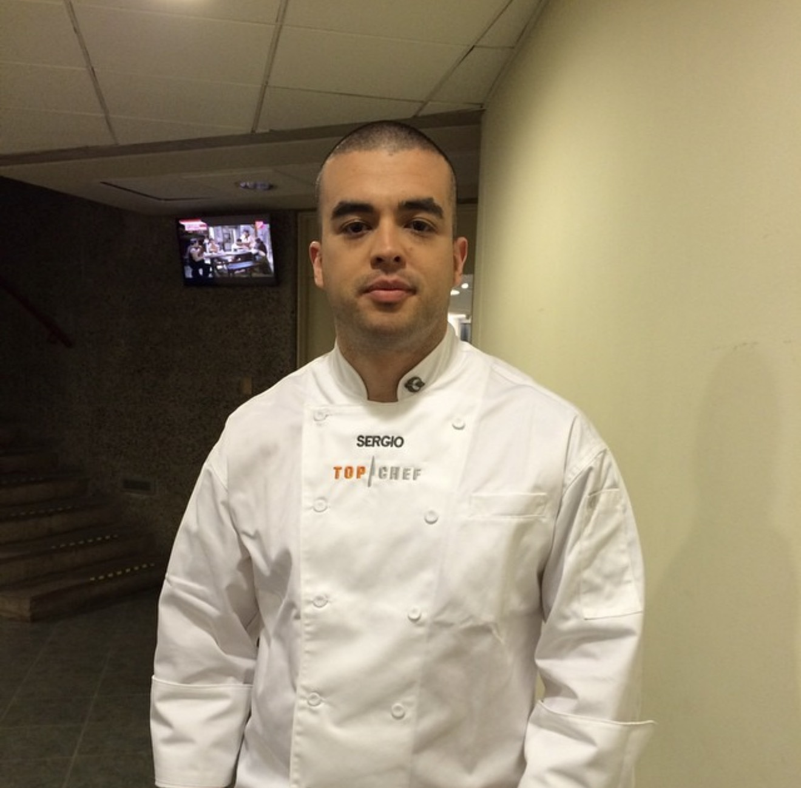
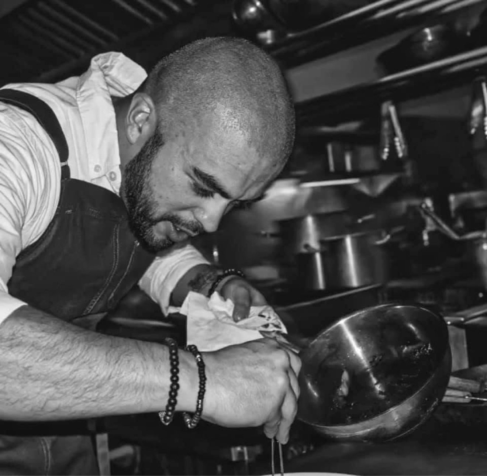
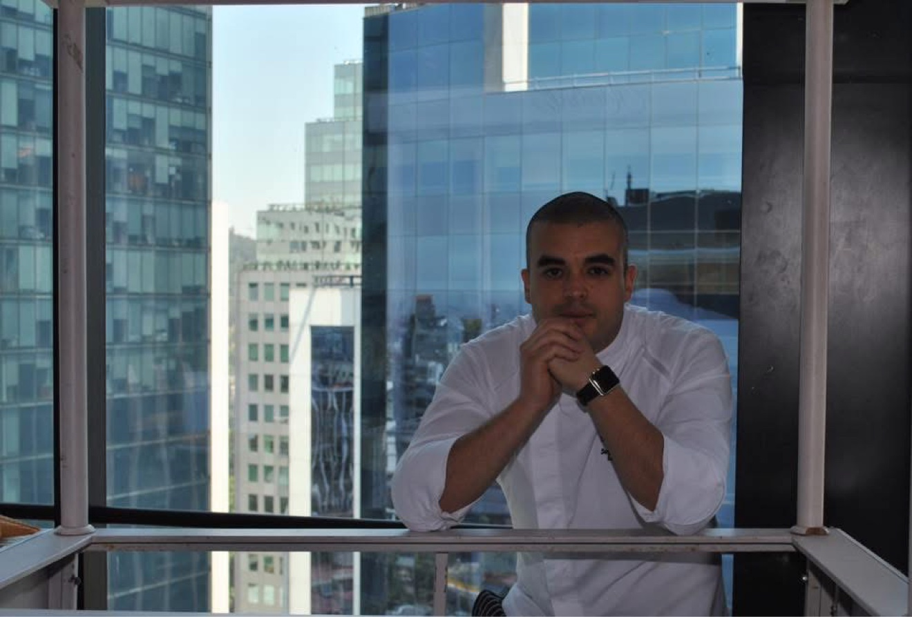
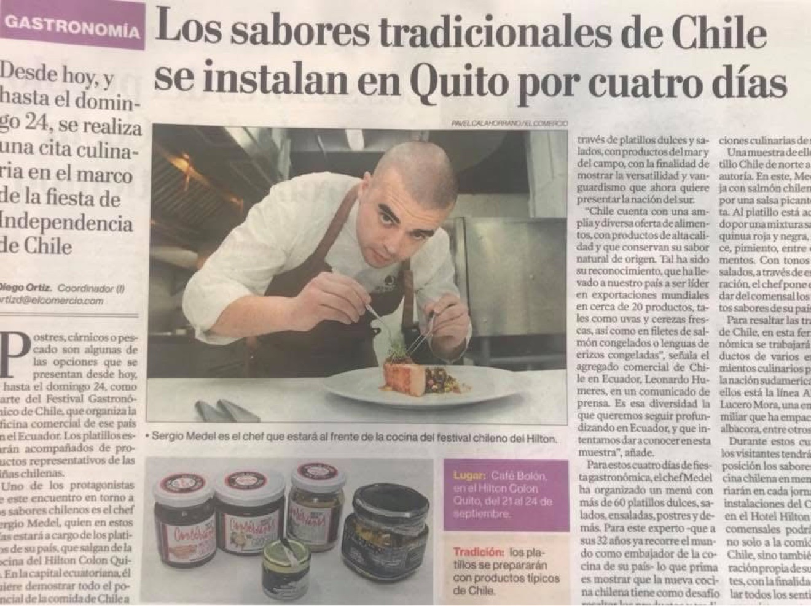
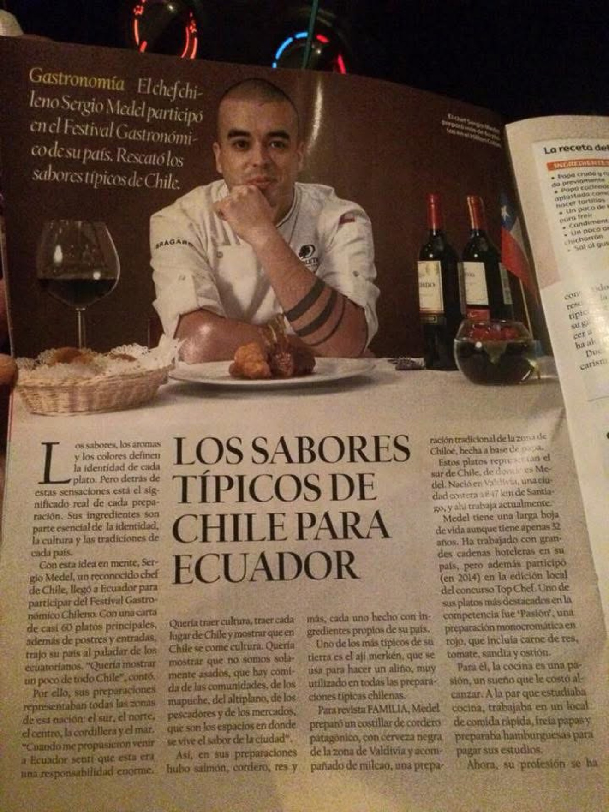
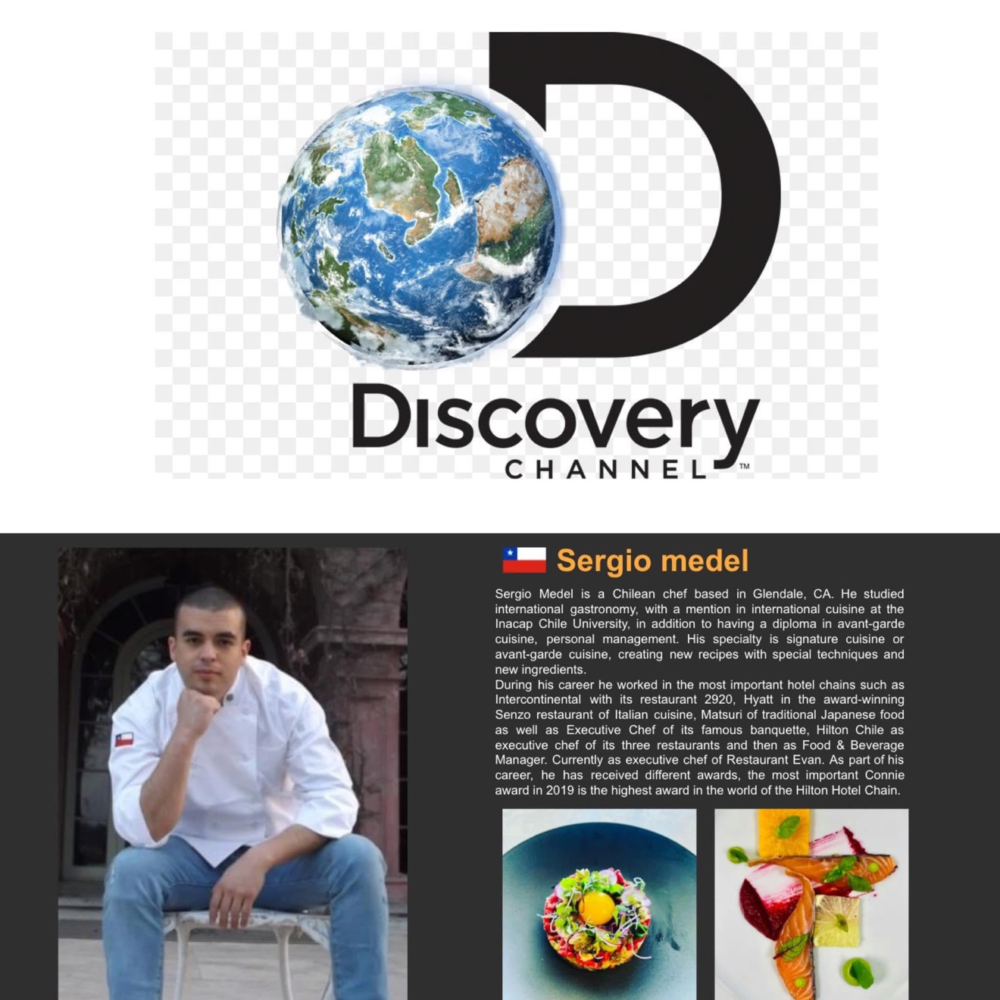

Sergio Medel
Executive Chef
Food and Beverage Experiences
Executive Chef
Food and Beverage Experiences
I'm Sergio Medel, an Executive Chef based in southern Utah, currently leading the kitchen at Añu Restaurant inside the Hotel De Novo Springdale, Tapestry Collection by Hilton — minutes from Zion National Park.
I was born in Valdivia, Chile, where my love for cooking began. I trained in international gastronomy back home and even competed on the first season of Top Chef Chile — an experience that shaped the way I cook and lead.
Chile gave me my roots: respect for the ingredient, fire, and feeding people well. From the Mapuche heritage of the south to the flavors of the whole country — that identity travels with me into every kitchen I lead.
My cooking is rooted in classic technique and driven by the seasons: honest plates, bold flavors, and hospitality that makes people want to come back. Over the past decade I've opened restaurants, led high-volume kitchens, and built teams across California, Nevada, and Utah.
My journey started in Valdivia, in the south of Chile — a land of rain, rivers, and deep Mapuche roots. That's where I fell in love with cooking: with fire, with honest ingredients, and with the idea that feeding people is one of the most human things you can do.
I trained in international gastronomy back home, and life took me further than I ever imagined. I competed on the first season of Top Chef Chile, cooked Chilean food festivals abroad, and earned my stripes in some of the toughest kitchens in the business.
In Los Angeles, I led Evan Steak House as Executive Chef. Then came Switchback Steak House (2021–2023), where I ran a high-volume kitchen night after night — consistency, cost control, and a brigade built to perform under pressure.
In 2023 I got the call every chef dreams of: open a restaurant from zero. As Opening Executive Chef of Anterra (Curio Collection by Hilton), I built everything — the concept, the menus, the team, the standards.
And since August 2024, I'm home: Executive Chef at the Hotel De Novo Springdale, Tapestry Collection by Hilton, leading Añu Restaurant at the gates of Zion National Park. Every plate I send out carries a piece of Valdivia with it.
Full-service catering for events of any size — custom menus, professional staff, and flawless execution.
Unforgettable wedding menus, from intimate ceremonies to grand receptions. Tastings and custom planning included.
Business lunches, conferences, and corporate events with polished, reliable service.
Special occasions deserve a personal touch — private chef dinners tailored to you and your guests.
Culinary consulting for restaurants and hotels — menu development, kitchen operations, cost control, and team training.
Opening restaurants from zero: concept, menus, hiring and training the brigade, and setting the standard from day one.






"He said we would be eating at the best place in Springdale — and he was telling the truth! He gave us his personal cell number if I needed anything, even during the meal. Who does this?! Oh my, the food! Out of this world!"
"This chef knows what he's doing! The best food we've had in the USA since we arrived for our vacation 10 days ago. Superb. Well done chef and his great team."
"The chef Sergio did an amazing job preparing the food — so glad we had dinner here. We will be back again!"
"We got to meet Sergio (the chef) himself. He is an extremely nice and humble person. The dishes he creates are really amazing and we truly did not have a bad bite here."
"Shout out to head chef Sergio who came out and explained some of the more intricate aspects of the dishes to us."
"I really appreciated that the chef is from Chile and we got to try some flavors from there. Overall a gem of a place."